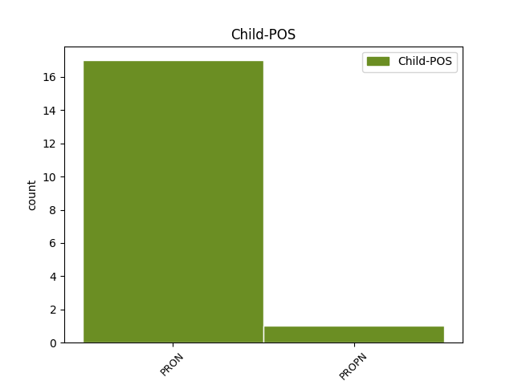

Distribution of features within this leaf

No agree examples found.
Disagree Examples:
1 Kätte _ _ _ _ 0 _ _ _
2 on _ _ _ _ 0 _ _ _
3 jõudnud _ _ _ _ 0 _ _ _
4 aasta _ _ _ _ 0 _ _ _
5 kõige _ _ _ _ 0 _ _ _
6 pimedam _ _ _ _ 0 _ _ _
7 kuu _ _ _ _ 0 _ _ _
8 , _ _ _ _ 0 _ _ _
9 mida mis PRON P Case=Par|Number=Sing|PronType=Int,Rel 10 comp:obj _ _
10 valgustama valgustama VERB V Case=Ill|VerbForm=Sup|Voice=Act 0 _ _ _
11 on _ _ _ _ 0 _ _ _
12 igale _ _ _ _ 0 _ _ _
13 poole _ _ _ _ 0 _ _ _
14 säravad _ _ _ _ 0 _ _ _
15 tuled _ _ _ _ 0 _ _ _
16 põlema _ _ _ _ 0 _ _ _
17 pandud _ _ _ _ 0 _ _ _
18 . _ _ _ _ 0 _ _ _
1 Seega _ _ _ _ 0 _ _ _
2 justkui _ _ _ _ 0 _ _ _
3 saaksid _ _ _ _ 0 _ _ _
4 peale _ _ _ _ 0 _ _ _
5 end ise PRON P Case=Par|Number=Sing|PronType=Prs|Reflex=Yes 7 comp:obj _ _
6 kristlasteks _ _ _ _ 0 _ _ _
7 pidavate pidav ADJ A Case=Gen|Degree=Pos|Number=Plur|Tense=Pres|VerbForm=Part|Voice=Act 0 _ _ _
8 ka _ _ _ _ 0 _ _ _
9 teised _ _ _ _ 0 _ _ _
10 enesepetuse _ _ _ _ 0 _ _ _
11 korras _ _ _ _ 0 _ _ _
12 põhjendada _ _ _ _ 0 _ _ _
13 , _ _ _ _ 0 _ _ _
14 mispärast _ _ _ _ 0 _ _ _
15 ikkagi _ _ _ _ 0 _ _ _
16 jõulude _ _ _ _ 0 _ _ _
17 sisulist _ _ _ _ 0 _ _ _
18 sõnumit _ _ _ _ 0 _ _ _
19 kuulda _ _ _ _ 0 _ _ _
20 võetakse _ _ _ _ 0 _ _ _
21 : _ _ _ _ 0 _ _ _
22 osta _ _ _ _ 0 _ _ _
23 , _ _ _ _ 0 _ _ _
24 osta _ _ _ _ 0 _ _ _
25 ja _ _ _ _ 0 _ _ _
26 veel _ _ _ _ 0 _ _ _
27 kord _ _ _ _ 0 _ _ _
28 osta _ _ _ _ 0 _ _ _
29 ! _ _ _ _ 0 _ _ _
1 pani _ _ _ _ 0 _ _ _
2 mingi _ _ _ _ 0 _ _ _
3 naeru _ _ _ _ 0 _ _ _
4 märgi _ _ _ _ 0 _ _ _
5 ka _ _ _ _ 0 _ _ _
6 veel _ _ _ _ 0 _ _ _
7 nii _ _ _ _ 0 _ _ _
8 vastik _ _ _ _ 0 _ _ _
9 on _ _ _ _ 0 _ _ _
10 olla _ _ _ _ 0 _ _ _
11 , _ _ _ _ 0 _ _ _
12 kooklis _ _ _ _ 0 _ _ _
13 ka _ _ _ _ 0 _ _ _
14 mingi _ _ _ _ 0 _ _ _
15 küikk _ _ _ _ 0 _ _ _
16 pelgavad _ _ _ _ 0 _ _ _
17 mind _ _ _ _ 0 _ _ _
18 jja _ _ _ _ 0 _ _ _
19 sosistavad _ _ _ _ 0 _ _ _
20 minu _ _ _ _ 0 _ _ _
21 ees _ _ _ _ 0 _ _ _
22 Mis mis PRON P Case=Nom|Number=Sing|PronType=Int,Rel 25 comp:obj _ _
23 ma _ _ _ _ 0 _ _ _
24 neile _ _ _ _ 0 _ _ _
25 ütlema ütlema VERB V Case=Ill|VerbForm=Sup|Voice=Act 0 _ _ _
26 pean _ _ _ _ 0 _ _ _
27 ? _ _ _ _ 0 _ _ _
28 nad _ _ _ _ 0 _ _ _
29 ütlevad _ _ _ _ 0 _ _ _
30 mulle _ _ _ _ 0 _ _ _
31 migni _ _ _ _ 0 _ _ _
32 loll _ _ _ _ 0 _ _ _
33 sõber _ _ _ _ 0 _ _ _
34 ausõna _ _ _ _ 0 _ _ _
35 ! _ _ _ _ 0 _ _ _
1 Kui _ _ _ _ 0 _ _ _
2 helistas _ _ _ _ 0 _ _ _
3 hoistamissaatesse _ _ _ _ 0 _ _ _
4 inimene _ _ _ _ 0 _ _ _
5 , _ _ _ _ 0 _ _ _
6 kes _ _ _ _ 0 _ _ _
7 ei _ _ _ _ 0 _ _ _
8 teadnud _ _ _ _ 0 _ _ _
9 tähtajalise _ _ _ _ 0 _ _ _
10 ja _ _ _ _ 0 _ _ _
11 jooksva _ _ _ _ 0 _ _ _
12 hoiuse _ _ _ _ 0 _ _ _
13 vahet _ _ _ _ 0 _ _ _
14 , _ _ _ _ 0 _ _ _
15 vaid _ _ _ _ 0 _ _ _
16 arvas _ _ _ _ 0 _ _ _
17 , _ _ _ _ 0 _ _ _
18 et _ _ _ _ 0 _ _ _
19 tähtajaline _ _ _ _ 0 _ _ _
20 on _ _ _ _ 0 _ _ _
21 see _ _ _ _ 0 _ _ _
22 , _ _ _ _ 0 _ _ _
23 kust _ _ _ _ 0 _ _ _
24 kogu _ _ _ _ 0 _ _ _
25 aeg _ _ _ _ 0 _ _ _
26 raha _ _ _ _ 0 _ _ _
27 kätte _ _ _ _ 0 _ _ _
28 saab _ _ _ _ 0 _ _ _
29 , _ _ _ _ 0 _ _ _
30 sis _ _ _ _ 0 _ _ _
31 oleks _ _ _ _ 0 _ _ _
32 saatejuht _ _ _ _ 0 _ _ _
33 vanema _ _ _ _ 0 _ _ _
34 vannan _ _ _ _ 0 _ _ _
35 pidanud _ _ _ _ 0 _ _ _
36 seda see PRON P Case=Par|Number=Sing|PronType=Dem 37 comp:obj _ _
37 selgitama selgitama VERB V Case=Ill|VerbForm=Sup|Voice=Act 0 _ _ _
38 . _ _ _ _ 0 _ _ _
1 Kuskilt _ _ _ _ 0 _ _ _
2 kurat _ _ _ _ 0 _ _ _
3 peab _ _ _ _ 0 _ _ _
4 ta _ _ _ _ 0 _ _ _
5 ju _ _ _ _ 0 _ _ _
6 leidma leidma VERB V Case=Ill|VerbForm=Sup|Voice=Act 0 _ _ _
7 Winampi Winamp PROPN S Case=Gen|Number=Sing 6 comp:obj _ _
8 või _ _ _ _ 0 _ _ _
9 Mediaplayeri _ _ _ _ 0 _ _ _
10 või _ _ _ _ 0 _ _ _
11 midagi _ _ _ _ 0 _ _ _
12 taolist _ _ _ _ 0 _ _ _
13 . _ _ _ _ 0 _ _ _